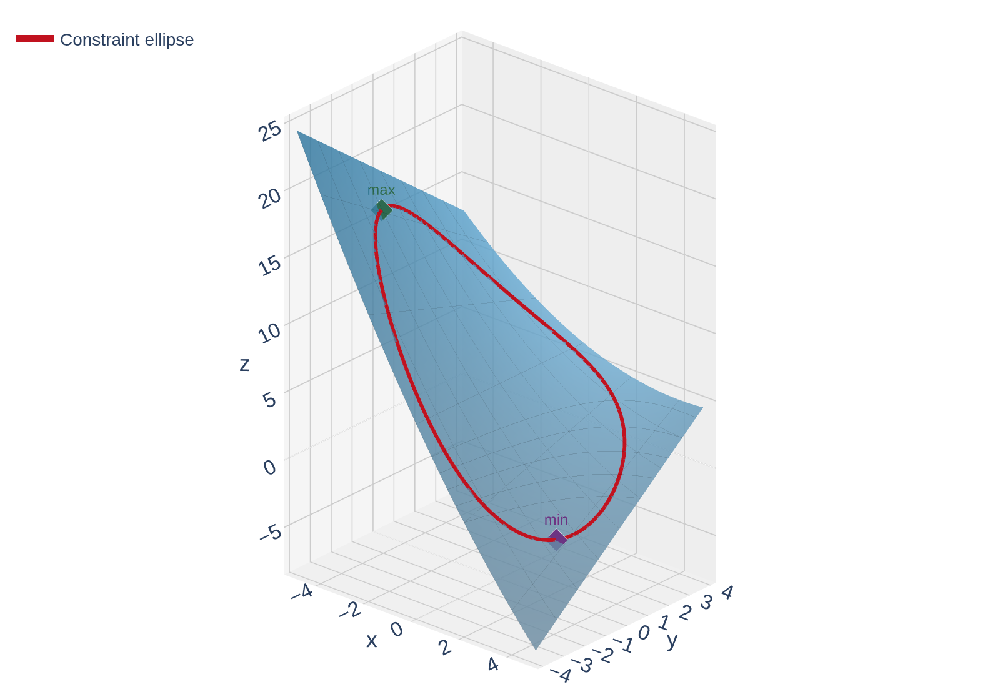
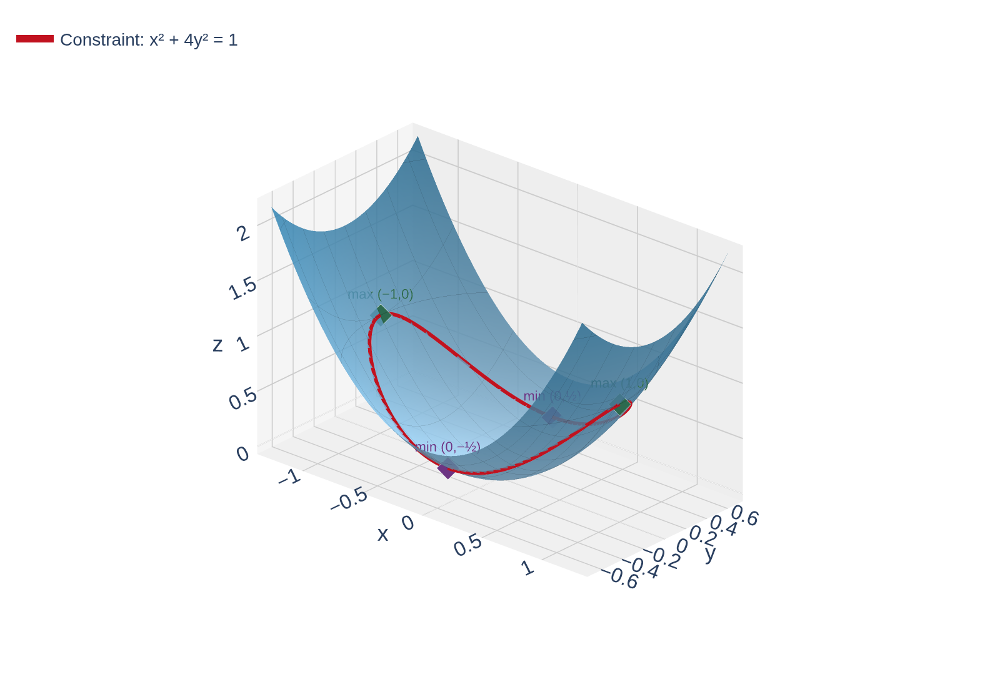

Section 14.8: Lagrange Multipliers
Partial Derivatives
MTH 310
Calculus III
Why Constrained Optimization?
In Section 14.7 we found absolute extrema by checking critical points and the boundary.
But what if the constraint is more complicated than a rectangular box?
Real-world examples:
- Maximize profit subject to a fixed budget
- Minimize material used to build a container with a required volume
- Find the hottest point on a wire bent into a curve
In each case we want to optimize \(f(x,y)\) (or \(f(x,y,z)\)) but we are restricted to points satisfying a constraint \(g(x,y) = k\).
A Motivating Example
Example 1
Find the absolute maximum and minimum of \(f(x,y) = 6 - 2x + 0.1x^2 + 0.3xy\) on the ellipse \(0.2x^2 + 0.3y^2 = 3.6\).
The constraint is that we only consider points \((x,y)\) lying on the ellipse. We can't just find critical points of \(f\) — the extrema occur on the ellipse.

Let's look at two approaches to this problem.
Approach 1: Parameterize the Constraint
Idea: Turn the constraint curve into a parametric curve, then substitute into \(f\) to get a single-variable problem.
The ellipse \(0.2x^2 + 0.3y^2 = 3.6\) can be parameterized as:
\[x = \sqrt{18}\cos t, \quad y = \sqrt{12}\sin t, \quad 0 \leq t < 2\pi\]
Now substitute into \(f\):
\[f(t) = 6 - 2\sqrt{18}\cos t + 1.8\cos^2 t + 0.3\sqrt{216}\cos t \sin t\]
This is a single-variable calculus problem — find the absolute max/min on \([0, 2\pi)\). But the algebra is ugly.
The Geometry Behind Lagrange Multipliers
Think about walking along the constraint curve \(g(x,y) = k\). At most points, \(f\) is either increasing or decreasing as you walk.
At an extremum along the constraint, \(f\) is neither increasing nor decreasing — the level curves of \(f\) are tangent to the constraint curve.
Recall:
- \(\nabla f\) is perpendicular to level curves of \(f\)
- \(\nabla g\) is perpendicular to the constraint curve \(g = k\)
If both gradients are perpendicular to the same curve at the same point, they must be parallel:
\[\nabla f = \lambda \nabla g\]

See It on a Contour Map
Here's the geometry in action: level curves of \(f(x,y) = x^2 + y^2\) (blue circles) with the constraint ellipse \(x^2 + 4y^2 = 1\) (red).
![A contour plot showing concentric circular level curves of f(x,y) = x-squared + y-squared in blue, with the constraint ellipse x-squared + 4y-squared = 1 drawn in red. At the four optimal points (plus/minus 1 comma 0) and (0 comma plus/minus one-half), the blue gradient arrows and red dashed gradient arrows point in the same direction, showing the gradients are parallel. At a non-optimal point on the upper-right of the ellipse, the two gradient arrows point in different directions, labeled not optimal.](figures/lagrange_geometry.png)
At the green dots (max), the level curve \(f = 1\) is tangent to the ellipse, and \(\nabla f \parallel \nabla g\).
At the purple dots (min), the level curve \(f = \frac{1}{4}\) is tangent to the ellipse, and \(\nabla f \parallel \nabla g\).
At the gray square (not optimal), \(\nabla f\) and \(\nabla g\) point in different directions — you can still increase \(f\) by walking along the ellipse.
The Method of Lagrange Multipliers
Method of Lagrange Multipliers
To find the maximum and minimum values of \(f(x,y)\) subject to the constraint \(g(x,y) = k\) (assuming these extreme values exist and \(\nabla g \neq \vec{0}\) on the curve \(g = k\)):
- Find all values of \(x, y\), and \(\lambda\) such that
\[\nabla f(x,y) = \lambda \nabla g(x,y) \quad \text{and} \quad g(x,y) = k\]
- Evaluate \(f\) at all the points \((x,y)\) found in step 1. The largest value is the maximum; the smallest is the minimum.
In two variables, \(\nabla f = \lambda \nabla g\) becomes the system:
\[f_x = \lambda g_x, \quad f_y = \lambda g_y, \quad g(x,y) = k\]
That's 3 equations in 3 unknowns (\(x\), \(y\), \(\lambda\)).
Quick Check: Set Up a Lagrange System
Suppose you want to minimize \(f(x,y) = x^2 + 2y^2\) subject to \(x + y = 4\).
Write the three equations you'd need to solve (but don't solve them).
\(f(x,y) = x^2 + 2y^2\), \(\quad g(x,y) = x + y = 4\).
\(\nabla f = \langle 2x, \, 4y \rangle\), \(\quad \nabla g = \langle 1, \, 1 \rangle\).
The system:
\[2x = \lambda(1), \quad 4y = \lambda(1), \quad x + y = 4\]
Example 2: Closest and Farthest from the Origin
Example 2
Find the maximum and minimum values of \(f(x,y) = x^2 + y^2\) on the ellipse \(x^2 + 4y^2 = 1\).
Since \(x^2 + y^2\) is the square of the distance from the origin, maximizing/minimizing \(f\) finds the farthest and closest points on the ellipse to the origin.
Set up: \(f(x,y) = x^2 + y^2\), \(\quad g(x,y) = x^2 + 4y^2 = 1\).
Compute gradients: \(\nabla f = \langle 2x, \, 2y \rangle\), \(\quad \nabla g = \langle 2x, \, 8y \rangle\).
System: \(2x = \lambda(2x)\), \(\quad 2y = \lambda(8y)\), \(\quad x^2 + 4y^2 = 1\).
From equation 1: \(2x(1 - \lambda) = 0\) \(\Rightarrow\) \(x = 0\) or \(\lambda = 1\).
Case 1: \(\lambda = 1\). Equation 2 gives \(2y = 8y\) \(\Rightarrow\) \(y = 0\).
Constraint: \(x^2 = 1\) \(\Rightarrow\) \(x = \pm 1\). Points: \((\pm 1, 0)\).
Case 2: \(x = 0\). Constraint: \(4y^2 = 1\) \(\Rightarrow\) \(y = \pm \frac{1}{2}\). Points: \((0, \pm \frac{1}{2})\).
Evaluate:
- \(f(\pm 1, 0) = 1\) \(\leftarrow\) maximum (farthest from origin)
- \(f(0, \pm \frac{1}{2}) = \frac{1}{4}\) \(\leftarrow\) minimum (closest to origin)

The farthest points \((\pm 1, 0)\) sit at the ends of the ellipse; the closest points \((0, \pm \frac{1}{2})\) sit at the narrow waist — exactly what the contour map from Slide 5 predicted.
Your Turn: Lagrange Practice
Example 3
Find the maximum and minimum values of \(f(x,y) = 3x + 4y\) on the circle \(x^2 + y^2 = 1\).
Hint: Set up \(\nabla f = \lambda \nabla g\) where \(g(x,y) = x^2 + y^2\).
Gradients: \(\nabla f = \langle 3, \, 4 \rangle\), \(\quad \nabla g = \langle 2x, \, 2y \rangle\).
System: \(3 = 2\lambda x\), \(\quad 4 = 2\lambda y\), \(\quad x^2 + y^2 = 1\).
Solve for \(x\) and \(y\): \(x = \dfrac{3}{2\lambda}\), \(\quad y = \dfrac{2}{\lambda}\).
Substitute into constraint:
\[\frac{9}{4\lambda^2} + \frac{4}{\lambda^2} = 1 \quad \Rightarrow \quad \frac{25}{4\lambda^2} = 1 \quad \Rightarrow \quad \lambda = \pm \frac{5}{2}\]
\(\lambda = \frac{5}{2}\): \(x = \frac{3}{5}\), \(y = \frac{4}{5}\). \(f = 5\). \(\leftarrow\) maximum
\(\lambda = -\frac{5}{2}\): \(x = -\frac{3}{5}\), \(y = -\frac{4}{5}\). \(f = -5\). \(\leftarrow\) minimum

Notice how the level lines of \(f\) (parallel lines) are tangent to the circle at the optimal points — exactly the geometry we predicted!
Three Variables: \(f(x,y,z)\) with Constraint \(g(x,y,z) = k\)
The method extends naturally to functions of three variables.
Optimize \(f(x,y,z)\) subject to \(g(x,y,z) = k\):
\[\nabla f = \lambda \nabla g \quad \Longrightarrow \quad f_x = \lambda g_x, \quad f_y = \lambda g_y, \quad f_z = \lambda g_z\]
Plus the constraint: \(g(x,y,z) = k\).
That's 4 equations in 4 unknowns (\(x\), \(y\), \(z\), \(\lambda\)).
Quick Check: Set Up a 3-Variable Lagrange System
Minimize \(f(x,y,z) = x^2 + y^2 + z^2\) subject to \(x + 2y + 3z = 6\).
Write the four equations you'd need to solve (but don't solve them).
\(\nabla f = \langle 2x, \, 2y, \, 2z \rangle\), \(\quad \nabla g = \langle 1, \, 2, \, 3 \rangle\).
The system:
\[2x = \lambda, \quad 2y = 2\lambda, \quad 2z = 3\lambda, \quad x + 2y + 3z = 6\]
Example 4: Minimum Surface Area Box
Example 4
Find the dimensions of a rectangular box with volume \(1000 \text{ cm}^3\) that has the smallest surface area.
Set up:
- Surface area: \(f(x,y,z) = 2xy + 2xz + 2yz\) \(\leftarrow\) minimize this
- Volume constraint: \(g(x,y,z) = xyz = 1000\)
Gradients:
\[\nabla f = \langle 2y + 2z, \; 2x + 2z, \; 2x + 2y \rangle\]
\[\nabla g = \langle yz, \; xz, \; xy \rangle\]
System from \(\nabla f = \lambda \nabla g\):
\[2y + 2z = \lambda yz \quad (1) \qquad 2x + 2z = \lambda xz \quad (2) \qquad 2x + 2y = \lambda xy \quad (3)\]
\[xyz = 1000 \quad (4)\]
Use symmetry: Subtract (2) from (1):
\[2(y - x) = \lambda z(y - x)\]
Either \(y = x\) or \(\lambda z = 2\). Similarly, subtracting (3) from (2) gives \(z = x\) or \(\lambda y = 2\).
If \(x = y = z\): From the constraint: \(x^3 = 1000\) \(\Rightarrow\) \(x = 10\).
The box is a cube: \(10 \times 10 \times 10\) cm, with surface area \(600 \text{ cm}^2\).
When to Use Lagrange Multipliers
How does Lagrange fit into the optimization toolkit from Chapter 14?
Step 1: What kind of region?
| Region Type | What to Do |
|---|---|
| Open region (no boundary) | Find critical points of \(f\); use Second Derivatives Test (14.7) |
| Closed & bounded region | Check interior critical points + optimize on the boundary separately |
Step 2: If you need to optimize on a boundary curve \(g = k\)\ldots
| Boundary Method | Best When |
|---|---|
| Parameterize the curve | Boundary has a simple parameterization (line, circle) |
| Lagrange multipliers | Constraint is hard to parameterize, or you have multiple constraints |